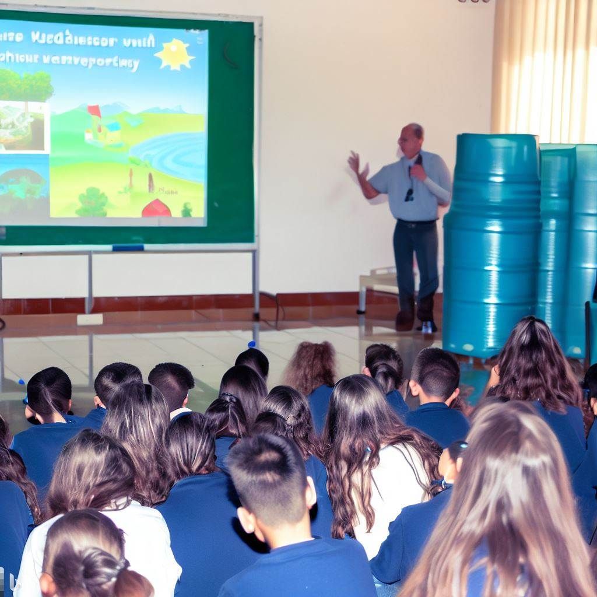

O que é?
Conscientização e educação referem-se ao processo de adquirir conhecimento sobre questões sociais, ambientais e de direitos humanos, além de disseminar esse conhecimento para conscientizar e inspirar outros.
Para que serve?
A conscientização e educação servem para despertar a compreensão e o senso de responsabilidade em relação a problemas e desafios que afetam a sociedade. Elas visam promover uma mudança de atitudes e comportamentos, buscando soluções sustentáveis e justas.
Como usar?
Busque informações sobre as questões que lhe interessam, leia livros, assista a documentários, participe de palestras e workshops. Compartilhe seu conhecimento por meio de conversas, mídias sociais ou eventos para sensibilizar e envolver outras pessoas.
Como isso ajuda o mundo?
A conscientização e educação são fundamentais para promover uma sociedade mais justa e sustentável. Ao compartilhar conhecimento, você contribui para que mais pessoas se engajem em causas importantes, promovam ações positivas e se tornem agentes de mudança, resultando em um mundo mais informado e consciente.